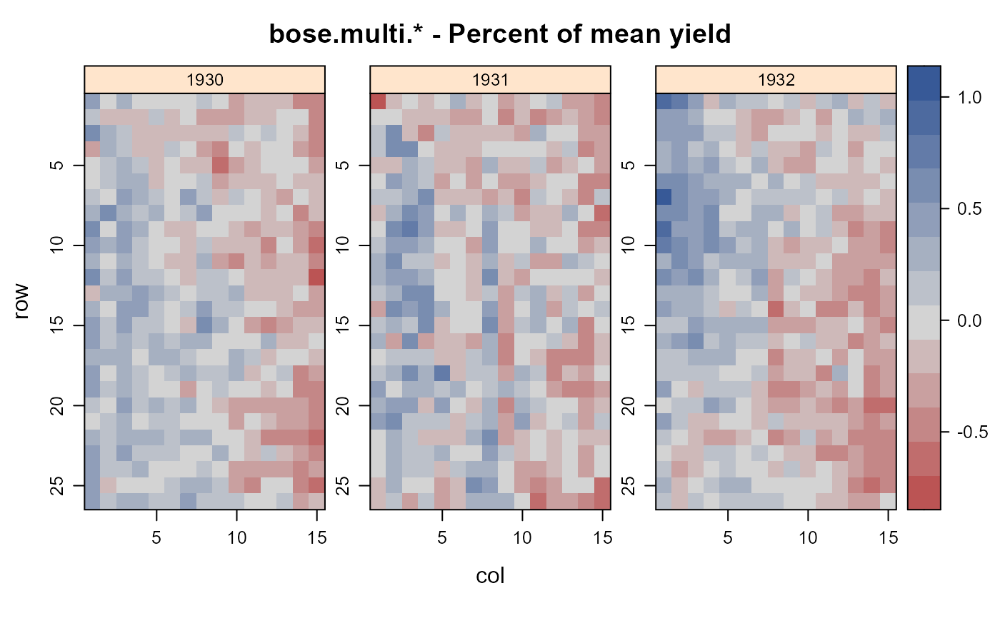

bose.multi.uniformity.RdUniformity trials of barley, wheat, lentils in India 1930-1932.
data("bose.multi.uniformity")
A data frame with 1170 observations on the following 5 variables.
yearyear
cropcrop
rowrow ordinate
colcolumn ordinate
yieldplot yield, grams
A field about 1/4 acre was sown in three consecutive years (beginning in 1929-1930) with barley, wheat, and lentil.
At harvest, borders 3 feet on east and west and 6 feet on north and south were removed. The field was divided into plots four feet square, which were harvested separately, measured in grams.
Fertility contours of the field were somewhat similar across years, with correlation values across years 0.45, 0.48, 0.21.
Field width: 15 plots * 4 feet = 60 feet.
Field length: 26 plots * 4 feet = 104 feet.
Conclusions:
"An experimental field which may be sensibly uniform for one crop or for one season may not be so for another crop or in a different season" p. 592.
Bose, R. D. (1935). Some soil heterogeneity trials at Pusa and the size and shape of experimental plots. Ind. J. Agric. Sci., 5, 579-608. Table 1 (p. 585), Table 4 (p. 589), Table 5 (p. 590). https://archive.org/details/in.ernet.dli.2015.271739
Shaw (1935). Handbook of Statistics for Use in Plant-Breeding and Agricultural Problems, p. 149-170. http://krishikosh.egranth.ac.in/handle/1/21153
library(agridat) data(bose.multi.uniformity) dat <- bose.multi.uniformity # match sum at bottom of Bose tables 1, 4, 5 # dat <!-- %>% group_by(year) %>% summarize(sum=sum(yield)) --> libs(desplot, dplyr) # Calculate percent of mean yield for each year dat <- group_by_(dat, ~ year)#> Warning: group_by_() is deprecated. #> Please use group_by() instead #> #> The 'programming' vignette or the tidyeval book can help you #> to program with group_by() : https://tidyeval.tidyverse.org #> This warning is displayed once per session.#> Warning: mutate_() is deprecated. #> Please use mutate() instead #> #> The 'programming' vignette or the tidyeval book can help you #> to program with mutate() : https://tidyeval.tidyverse.org #> This warning is displayed once per session.dat$year = factor(dat$year) # Bose smoothed the data by averaging 2x3 plots together before drawing # contour maps. Heatmaps of raw data have similar structure to Bose Fig 1. desplot(pctyld ~ col*row|year, dat, tick=TRUE, flip=TRUE, aspect=(26)/(15), main="bose.multi.* - Percent of mean yield")# contourplot() results need to be mentally flipped upside down # contourplot(pctyld ~ col*row|year, dat, # region=TRUE, as.table=TRUE, aspect=26/15)